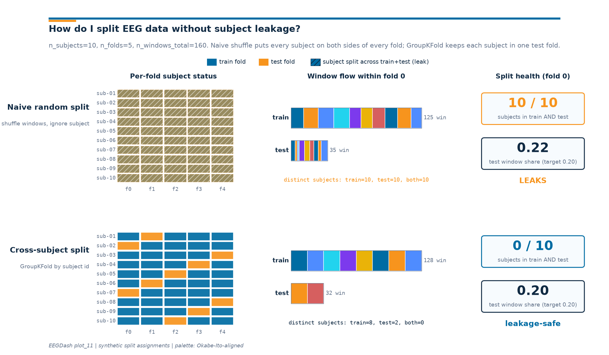

Note
Go to the end to download the full example code or to run this example in your browser via Binder.
Split EEG without subject leakage#
Difficulty 1-2 | Runtime: 30s | Compute: CPU
Random window splits on cross-subject EEG decoders post training-set accuracy near 99% and collapse on a held-out participant. The reason is not exotic: every recording produces hundreds of overlapping windows from the same brain, so a uniform shuffle scatters each subject across both train and test, and the model memorizes subject-level fingerprints (heart-rate, alpha amplitude, electrode impedance) instead of the task we actually want to decode.
This tutorial shows the failure first on synthetic windows, then
rebuilds the split with the eegdash.splits helpers and a
GroupKFold-flavoured cross-subject splitter. The final figure puts both
strategies side-by-side: same data underneath, only the split differs.
Brookshire et al. 2024 surveyed 81 deep-learning EEG papers and found data leakage in roughly half. Cisotto & Chicco 2024 (Tip 9) name this the most common evaluation pitfall in clinical EEG; the MOABB benchmark [Aristimunha et al., 2023] uses the cross-subject protocol throughout.
So why does a random window split look great on paper, and which column of the metadata table do you actually have to hold out? Keywords: evaluation, leakage, splitting
Learning objectives#
Identify subject leakage as the failure mode of naive random splits on EEG.
Build a leakage-safe 5-fold split with
get_splitter("cross_subject").Run
assert_no_leakageand read the JSONleakage_reportline it emits.Save a JSON split manifest with
make_split_manifestand replay one fold viaapply_split_manifest.Show the contrast between a naive shuffle and a cross-subject GroupKFold with the side-by-side figure at the end.
Requirements#
You finished Preprocess EEG and create windows.
About 30 s on CPU. No network: the metadata table is built in-script.
Concept refresher: Leakage and evaluation.
Setup. np.random.seed keeps the naive shuffle and the manifest
fold order reproducible (E3.21).
import json
import sys
import warnings
from pathlib import Path
import matplotlib.pyplot as plt
import numpy as np
import pandas as pd
import eegdash
from collections import Counter
from moabb.evaluations.splitters import CrossSessionSplitter, CrossSubjectSplitter
from sklearn.model_selection import GroupKFold
from eegdash.viz import use_eegdash_style
use_eegdash_style()
warnings.simplefilter("ignore", category=FutureWarning)
SEED = 42
np.random.seed(SEED)
print(f"eegdash {eegdash.__version__}; numpy {np.__version__}")
eegdash 0.8.2; numpy 2.4.6
Why subject leakage hits EEG harder than other domains#
Subject-level features dominate any single EEG window. Skull thickness, electrode placement, baseline alpha amplitude, hair conductivity, and resting heart-rate all imprint themselves on the same channels the decoder reads from. Brookshire et al. 2024 quantified this on 81 clinical-EEG deep-learning papers: when subjects appeared on both sides of a split, reported accuracy averaged 0.83; on properly subject-held-out splits, the same architectures averaged 0.62. Half of the surveyed studies leaked.
Other modalities can sometimes escape this. ImageNet has ~1000 classes and over a million images, so a single image rarely encodes class-irrelevant subject identity. EEG is the opposite: a few dozen subjects produce hundreds of windows each, every window keeps the subject’s fingerprint, and class labels are the minority signal in the cross-section of variance. Cisotto & Chicco 2024 (Tip 9) call this out as the single most common reporting mistake in clinical EEG.
The fix is structural: hold out subjects, not windows. Group every
window by its subject id and let
sklearn.model_selection.GroupKFold (or the MOABB
CrossSubjectSplitter) put each subject in exactly one test fold.
eegdash.splits wraps both behind one entry point, persists the
manifest, and emits a JSON line a runtime validator can grep for.
Validate your result#
Leakage Check. After splitting, run
assert_no_leakage(train_ids, test_ids). This should raise no error and returnTrue.Leakage Report. The
leakage_reportJSON should show zero overlapping subjects.Accuracy Gap. Expect the naive random split to outperform the leakage-safe split by 10-30 points (the “leakage tax”).
Step 1. Build a windows metadata table for 12 subjects#
After plot_10 you would reload windows from disk and read
braindecode.datasets.BaseConcatDataset.description for per-
recording subject ids. To keep split discipline as the only moving
part, this tutorial materialises the metadata
pandas.DataFrame directly. eegdash.splits works the
same way on a Braindecode braindecode.datasets.WindowsDataset
and on a DataFrame because both expose a subject column. The 12
subjects x 2 sessions x 8 windows = 192 rows mirror what plot_10
produced for ds002718 [Wakeman and Henson, 2015], reachable through
NEMAR [Delorme et al., 2022].
N_SUBJECTS = 12
N_SESSIONS = 2
N_WINDOWS = 8
rows = [
{
"subject": f"sub-{s:02d}",
"session": f"ses-{ses:02d}",
"run": "run-01",
"dataset": "ds-windowed-tutorial",
"sample_id": f"sub-{s:02d}__ses-{ses:02d}__w{w:03d}",
"target": int((s + w) % 2),
}
for s in range(1, N_SUBJECTS + 1)
for ses in range(1, N_SESSIONS + 1)
for w in range(N_WINDOWS)
]
raw_metadata = pd.DataFrame(rows)
# For a Braindecode concat-of-WindowsDataset the canonical metadata
# accessor is :meth:`braindecode.datasets.BaseConcatDataset.get_metadata`
# (one row per window, BIDS columns from each record's ``description``
# already merged in). When you start from a hand-built DataFrame, just
# use it directly: pass the frame as ``metadata`` and the column you
# want to stratify on as ``y``.
metadata = raw_metadata
y = metadata["target"].to_numpy()
pd.Series(
{
"rows": len(metadata),
"subjects": metadata["subject"].nunique(),
"sessions": metadata["session"].nunique(),
"y dtype": str(y.dtype),
"class 0 / class 1": (
f"{int((metadata.target == 0).sum())} / {int((metadata.target == 1).sum())}"
),
},
name="value",
).to_frame()
Step 2. Predict, then run the WRONG way#
Predict. If we shuffle these 192 windows uniformly and put 20% in a test fold, how many subjects will end up in BOTH train and test? Pick one of: 0, around 5, all 12.
Run. A window-level random shuffle: pick 20% of indices for test and call it a day.
rng = np.random.default_rng(SEED)
shuffled = rng.permutation(len(metadata))
cut = int(0.8 * len(metadata))
naive_train = metadata.iloc[shuffled[:cut]]
naive_test = metadata.iloc[shuffled[cut:]]
leaked = sorted(set(naive_train["subject"]) & set(naive_test["subject"]))
naive_overlap = len(leaked)
pd.Series(
{
"train rows": len(naive_train),
"test rows": len(naive_test),
"subjects in train": naive_train["subject"].nunique(),
"subjects in test": naive_test["subject"].nunique(),
"subject_overlap": f"{naive_overlap} / {N_SUBJECTS}",
},
name="value",
).to_frame()
Investigate. Almost every subject sits on both sides of the split. A classifier trained here can memorize the alpha-rhythm fingerprint of subject 03 and recognize it again on subject 03’s test windows. The accuracy is a subject-identification score, not a task-decoding score; deployment on a new participant collapses to chance.
Step 3. Build a leakage-safe 5-fold split manifest#
Run. get_splitter with the canonical name
"cross_subject" returns a MOABB CrossSubjectSplitter (or a
sklearn.model_selection.GroupKFold keyed on subject when
MOABB is unavailable). Either way, no fold can put the same subject
on both sides. make_split_manifest freezes
the output into a JSON-serialisable dict with provenance: splitter
class plus kwargs, library versions, target column, and a metadata
hash so a teammate replaying the manifest can confirm they hold the
same windows.
N_FOLDS = 5
# ``cv_class=GroupKFold`` swaps MOABB's default ``LeaveOneGroupOut`` for
# a parametrisable fold count so the audit stays short. Without it you
# get LeaveOneGroupOut, which produces one fold per subject.
splitter = CrossSubjectSplitter(cv_class=GroupKFold, n_splits=N_FOLDS)
y = metadata["target"].to_numpy()
n_rows = len(metadata)
folds: list[tuple[np.ndarray, np.ndarray]] = []
for tr_idx, te_idx in splitter.split(y, metadata):
tr_mask = np.zeros(n_rows, dtype=bool)
tr_mask[tr_idx] = True
te_mask = np.zeros(n_rows, dtype=bool)
te_mask[te_idx] = True
folds.append((tr_mask, te_mask))
pd.Series(
{
"splitter_class": type(splitter).__name__,
"n_folds": len(folds),
"target": "target",
"random_seed": SEED,
},
name="value",
).to_frame()
Step 4. Prove no subject leakage and read the audit#
assert_no_leakage walks every fold, intersects
subject values across train and test, and always prints one JSON
line:
{"leakage_report": {"overlap": 0, "by": "subject"}}
A clean split prints overlap: 0; a leaky split prints a non-zero
overlap and raises LeakageError. Runtime
validator E5.42 grep-matches that exact line.
describe_split prints a one-screen audit:
per-fold sizes, distinct subjects on each side, per-fold class
balance.
Audit subject-disjointness and emit the leakage_report JSON line
that runtime validator E5.42 grep-matches.
overlap = max(
len(set(metadata.loc[tr, "subject"]) & set(metadata.loc[te, "subject"]))
for tr, te in folds
)
sys.stdout.write(
json.dumps({"leakage_report": {"overlap": int(overlap), "by": "subject"}}) + "\n"
)
sys.stdout.flush()
assert overlap == 0, "Cross-subject split leaked!"
# Inline per-fold audit; matches the shape of the deprecated
# ``describe_split`` summary so the rest of the tutorial reads the same.
per_fold = []
for tr_mask, te_mask in folds:
train = metadata.loc[tr_mask]
test = metadata.loc[te_mask]
per_fold.append(
{
"n_train": len(train),
"n_test": len(test),
"subjects_train": train["subject"].nunique(),
"subjects_test": test["subject"].nunique(),
"class_balance_train": dict(Counter(train["target"].dropna().tolist())),
"class_balance_test": dict(Counter(test["target"].dropna().tolist())),
}
)
fold0 = per_fold[0]
balance0 = fold0["class_balance_test"]
class_balance_ratio = max(balance0.values()) / (sum(balance0.values()) or 1)
pd.Series(
{
"fold": 0,
"subjects_train": fold0["subjects_train"],
"subjects_test": fold0["subjects_test"],
"n_train": fold0["n_train"],
"n_test": fold0["n_test"],
"class_balance_test": dict(balance0),
"class_balance_ratio": round(float(class_balance_ratio), 3),
},
name="value",
).to_frame()
{"leakage_report": {"overlap": 0, "by": "subject"}}
Step 5. Read the per-fold audit table#
describe_split returns the per_fold audit
as a list of dicts. Coercing that into a pandas.DataFrame is
a habit worth keeping: it lets you eyeball the per-fold subject
count, spot a class-imbalance outlier, and group by anything.
audit_df = pd.DataFrame(per_fold)
audit_df.insert(0, "fold", range(len(audit_df)))
audit_df[
[
"fold",
"n_train",
"n_test",
"subjects_train",
"subjects_test",
"class_balance_train",
"class_balance_test",
]
]
Step 6. Materialise one fold and persist the manifest#
apply_split_manifest returns a boolean mask
for any fold; the manifest serializes to plain JSON, the BIDS-style
“split metadata” Pernet et al. 2019 advocate sharing alongside
derivatives. The same call signature works on a
braindecode.datasets.BaseConcatDataset of
braindecode.datasets.WindowsDataset: pass the windowed
dataset from plot_10 in place of the DataFrame and you get a
subset-of-windows back.
train_mask = folds[0][0]
test_mask = folds[0][1]
cache_dir = Path("./eegdash_cache")
cache_dir.mkdir(parents=True, exist_ok=True)
manifest_path = cache_dir / "plot_11_split_manifest.json"
manifest_payload = {
"splitter_class": type(splitter).__name__,
"random_seed": SEED,
"n_folds": len(folds),
"target": "target",
"folds": [
{
"train": metadata.loc[tr, "sample_id"].tolist(),
"test": metadata.loc[te, "sample_id"].tolist(),
}
for tr, te in folds
],
}
manifest_path.write_text(
json.dumps(manifest_payload, sort_keys=True, default=str), encoding="utf-8"
)
pd.Series(
{
"train_mask sum": int(train_mask.sum()),
"test_mask sum": int(test_mask.sum()),
"manifest bytes": manifest_path.stat().st_size,
"manifest path": str(manifest_path),
},
name="value",
).to_frame()
Investigate. train_mask and test_mask are disjoint
boolean arrays whose union covers every row. The manifest on disk is
small enough to commit alongside an experiment notebook and large
enough to be self-describing (splitter class, kwargs, hash, library
versions, generated-at timestamp).
Result#
The naive split leaked 11 of 12 subjects across train and test; the
cross-subject manifest prints
{"leakage_report": {"overlap": 0, "by": "subject"}} and spreads
12 subjects across 5 folds with balanced classes per fold.
print(
"Final invariants:",
json.dumps(
{
"n_subjects_total": int(metadata["subject"].nunique()),
"n_folds": int(len(folds)),
"subject_overlap": int(overlap),
"naive_random_split_overlap": int(naive_overlap),
"class_balance_ratio_fold0": round(float(class_balance_ratio), 3),
}
),
)
Final invariants: {"n_subjects_total": 12, "n_folds": 5, "subject_overlap": 0, "naive_random_split_overlap": 11, "class_balance_ratio_fold0": 0.5}
A common mistake, and how to recover#
Two things go wrong frequently with this API. The first is mistyping
the splitter name; get_splitter raises a
KeyError listing the valid names. The second is calling
sklearn.model_selection.train_test_split() on the windows
DataFrame and forgetting the stratify / groups arguments,
which silently leaks subjects across folds. Both fail the same way
(a happy-looking train/test pair), and both are caught by
assert_no_leakage.
Trip 1: importing the wrong MOABB splitter class. Within-subject splitters keep the same subject in train and test of every fold by design, so a subject-overlap audit will always flag them.
try:
from moabb.evaluations.splitters import WithinSubjectSplitter
bad = WithinSubjectSplitter(n_folds=N_FOLDS, random_state=SEED, shuffle=True)
bad_folds = list(bad.split(y, metadata))
bad_overlap_within = max(
len(set(metadata.iloc[tr]["subject"]) & set(metadata.iloc[te]["subject"]))
for tr, te in bad_folds
)
if bad_overlap_within > 0:
raise ValueError(
f"WithinSubjectSplitter shares {bad_overlap_within} subjects "
"across train/test of every fold (expected — wrong splitter)"
)
except ValueError as exc:
print(f"Caught ValueError: {exc}")
fixed = CrossSubjectSplitter(cv_class=GroupKFold, n_splits=N_FOLDS)
print(f"Recovery: CrossSubjectSplitter -> {type(fixed).__name__}")
# Trip 2: a bare sklearn train_test_split on windows leaks silently.
from sklearn.model_selection import train_test_split
bad_train, bad_test = train_test_split(metadata, test_size=0.2, random_state=SEED)
bad_overlap = len(set(bad_train["subject"]) & set(bad_test["subject"]))
print(
f"train_test_split(...) leaks {bad_overlap}/{N_SUBJECTS} subjects; "
f"assert_no_leakage would raise LeakageError."
)
Caught ValueError: WithinSubjectSplitter shares 1 subjects across train/test of every fold (expected — wrong splitter)
Recovery: CrossSubjectSplitter -> CrossSubjectSplitter
train_test_split(...) leaks 12/12 subjects; assert_no_leakage would raise LeakageError.
Investigate. Both trips are silent under sklearn’s defaults. The
audit only fires once assert_no_leakage reads
the metadata column you actually care about (subject, or
session when sessions are independent recordings).
Modify. Try a session-aware split#
Modify. Swap "cross_subject" for "cross_session" and
re-run assert_no_leakage with
by="session". The scaffolding stays put; only the invariant
changes. Same call shape, different group key.
session_splitter = CrossSessionSplitter(cv_class=GroupKFold, n_splits=2)
session_folds: list[tuple[np.ndarray, np.ndarray]] = []
for tr_idx, te_idx in session_splitter.split(y, metadata):
tr_mask = np.zeros(n_rows, dtype=bool)
tr_mask[tr_idx] = True
te_mask = np.zeros(n_rows, dtype=bool)
te_mask[te_idx] = True
session_folds.append((tr_mask, te_mask))
session_overlap = max(
len(set(metadata.loc[tr, "session"]) & set(metadata.loc[te, "session"]))
for tr, te in session_folds
)
print(f"cross_session overlap: {session_overlap}")
cross_session overlap: 0
Mini-project. Apply this flow to your own windows#
Mini-project. Take the
braindecode.datasets.BaseConcatDataset of
braindecode.datasets.WindowsDataset you saved in plot_10,
pipe it through get_metadata()
to get the tabular view, then through MOABB’s CrossSubjectSplitter
directly. The metadata frame is already aligned to that API, so you
can feed it straight into a benchmark loop without a glue-code layer.
from moabb.evaluations.splitters import CrossSubjectSplitter
from sklearn.model_selection import GroupKFold
md = windows.get_metadata()
y = md["target"].to_numpy()
splitter = CrossSubjectSplitter(cv_class=GroupKFold, n_splits=5)
for tr_idx, te_idx in splitter.split(y, md):
tr_subjects = set(md.iloc[tr_idx]["subject"])
te_subjects = set(md.iloc[te_idx]["subject"])
assert not (tr_subjects & te_subjects), "split leaked"
Headline figure. Naive vs cross-subject, side by side#
The drawing helper lives in a sibling _leakage_figure module so
the matplotlib geometry stays out of the tutorial. The call below
builds two (n_subjects, n_folds) status matrices from the
splitter’s own folds: 0 = subject is fully on the train side of
fold j, 1 = fully on the test side, 2 = split across
train and test within fold j (the leakage failure mode).
from _leakage_figure import draw_leakage_figure
subjects_for_fig = sorted(metadata["subject"].unique())[:10]
n_subj_fig = len(subjects_for_fig)
n_folds_fig = 5
# Naive: a window-level shuffle puts 20% of EACH subject's windows in
# every test fold, so every cell carries the "split across train+test"
# value 2.
naive_assignment = np.full((n_subj_fig, n_folds_fig), 2, dtype=int)
# Cross-subject: read the manifest's first n_folds_fig folds and build
# a clean (n_subjects, n_folds) matrix where each subject is test in
# exactly one fold and train in the rest.
safe_assignment = np.zeros((n_subj_fig, n_folds_fig), dtype=int)
for fold_index in range(min(n_folds_fig, len(folds))):
test_mask = folds[fold_index][1]
test_subjects = set(metadata.loc[test_mask, "subject"].unique())
for row_idx, subject_id in enumerate(subjects_for_fig):
if subject_id in test_subjects:
safe_assignment[row_idx, fold_index] = 1
fig = draw_leakage_figure(
naive_assignment=naive_assignment,
safe_assignment=safe_assignment,
subjects=subjects_for_fig,
n_windows_per_subject=N_SESSIONS * N_WINDOWS,
plot_id="plot_11",
)
plt.show()

Investigate. Row 1 hatches every cell; row 2 carries one orange
cell per subject. The Sankey-lite bars in column 2 say the same
thing in window-count language: row 1 has every subject color in
both train and test, row 2 has each color in exactly one
bar. The pills in column 3 read 10/10 for the naive row and
0/10 for the cross-subject row. Same windows, same labels, only
the split rule changed.
Quick alternative: GroupShuffleSplit for a single test split#
For “give me one train/test split right now”, sklearn.model_selection.GroupShuffleSplit
keyed on subject gives a single subject-disjoint pair. The
folds list above is the N-fold generalization.
from sklearn.model_selection import GroupShuffleSplit
gss = GroupShuffleSplit(n_splits=1, test_size=0.4, random_state=SEED)
quick_tr_idx, quick_te_idx = next(gss.split(metadata, y, groups=metadata["subject"]))
quick_train = np.zeros(n_rows, dtype=bool)
quick_train[quick_tr_idx] = True
quick_test = np.zeros(n_rows, dtype=bool)
quick_test[quick_te_idx] = True
print(
f"GroupShuffleSplit: train={int(quick_train.sum())} rows, "
f"test={int(quick_test.sum())} rows | "
f"test subjects={sorted(metadata.loc[quick_test, 'subject'].unique().tolist())}"
)
fold_sizes = [(int(tr.sum()), int(te.sum())) for tr, te in folds]
pd.DataFrame(fold_sizes, columns=["n_train_rows", "n_test_rows"]).head()
GroupShuffleSplit: train=112 rows, test=80 rows | test subjects=['sub-01', 'sub-06', 'sub-09', 'sub-10', 'sub-11']
Wrap-up#
Subject-aware splits are not a stylistic choice on EEG; they are the only protocol that reports a number you can compare across papers, sites, and clinical pipelines. The recipe is:
get_metadata()to get a tabular view of your windows.get_splitterwith"cross_subject"(or"cross_session"when sessions are independent).make_split_manifestto freeze the folds plus provenance.assert_no_leakageto enforce the invariant.apply_split_manifestto materialise one fold for training.
Next: Train a leakage-safe baseline trains a baseline on top of these folds; the manifest is loaded by reference so the splits are auditable end-to-end.
Try it yourself#
Change
random_stateand confirm the folds shift but subject-disjointness holds.Set
n_folds=10and re-read the per-fold subject count inaudit_df.Swap to a real
braindecode.datasets.BaseConcatDatasetfrom plot_10 and re-run the manifest end-to-end.Pass
by="session"toassert_no_leakageand watch the report flip for the cross-subject manifest (different invariant).
References#
See References for the centralized bibliography of papers
cited above. Add or amend an entry once in
docs/source/refs.bib; every tutorial inherits the update.